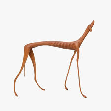
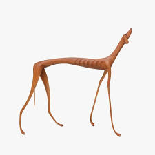

"Vidas Secas", de Graciliano Ramos, é um clássico da literatura brasileira que retrata a vida difícil de uma família no sertão nordestino. Através da história de Fabiano e sua família, a obra aborda temas como pobreza, seca e a luta pela sobrevivência, revelando a resiliência diante da adversidade.
"Vidas Secas" narra a história de Fabiano, um vaqueiro que vive com sua família no sertão nordestino do Brasil. A obra começa com a descrição da seca severa que afeta a região, forçando Fabiano, sua esposa Sinhá Vitória, e seus filhos a deixarem sua terra em busca de melhores condições de vida. A família enfrenta inúmeras dificuldades, incluindo a escassez de alimentos e a opressão de autoridades locais. Fabiano é um personagem que simboliza a luta do homem simples contra as adversidades. Ele é retratado como um trabalhador honesto, mas limitado em sua capacidade de entender e lutar contra as injustiças sociais. Os filhos de Fabiano, principalmente o menino e a menina, têm suas próprias experiências e percepções da vida dura no sertão. O cachorro da família, Baleia, é um importante símbolo de lealdade e vulnerabilidade. A relação deles é um reflexo da luta pela sobrevivência e da dignidade diante das dificuldades. À medida que a história avança, a família se depara com a indiferença do governo e a luta contínua contra a miséria. A narrativa é fragmentada, alternando entre as perspectivas dos personagens, o que permite uma compreensão mais profunda de suas emoções e desafios. O desfecho da história é trágico, com a família continuando a enfrentar a seca e a opressão. A obra termina com uma sensação de desamparo, mas também de resiliência, convidando o leitor a refletir sobre a condição humana e a luta incessante por um futuro melhor. "Vidas Secas" é uma crítica poderosa à desigualdade social e à luta pela sobrevivência em condições adversas.